Random Events
Introduction
Random events are a feature Jagex have placed in Runescape to stop cheaters. They can occur at any time and any place - while you are doing anything! There are two types. Firstly, there are general events that can occur while you are doing anything - such as a genie appearing - and all you have to do is respond to them. Secondly, there are skill specific events which occur when you have been training that skill for a while. Again, all you have to do is respond to them.Below, all the different random events are explained with details of when they appear, what they do and what you should do.
General Random Events
General Random events are not skill limited, they can happen anywhere and anytime and are there to make sure you are awake and at the keyboard.Drunken Dwarf
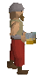 |
A drunken dwarf will appear anywhere and give you a beer and a kebab. Talk to him straight away and recieve a kebab and a beer! If you ignore him he will start attacking you weakly with badly aimed rocks, you cannot attack him back. He will attack you indefinitely until you talk to him or climb a ladder/teleport. |
Genie
| He appears and gives you a magic lamp, when you rub the magic lamp you get an options screen like the one below where you can get free xp for a any skill of your choice, the amount of xp you get if given below the picture: (Note: you cannot bank or trade the lamp) Answer him and recieve your lamp. If you don't, he will teleport you somewhere else. | 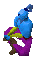 |
|
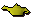 |
|
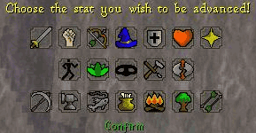
XP given = Level in that skill * 10
Swarm
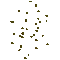 |
This annoying swarm will attack you hitting ticklish 1's and 2's while you are doing anything. You cannot attack them so run away until they stop chasing you - insect repellent doesn't work. |
Strange Plant
| While doing anything a strangle plant will start growing next to you. It will be fully grown in about a minute or so. When its fully grown 'pick' the plant to get a 'strange fruit' which when eaten replenishes 30% of your energy and cures poison. If you don't pick it, the plant will attack and could poison you. | 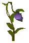 |
Mysterious Old Man
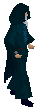 |
The Mysterious Old Man (MOM) appears and interrupts whatever it is that you were doing. Some say he's just lonely, so if he talks to you, you should talk back. By talking to the old man, he may also either give you a Strange Box, or teleport you to a Maze or Mime Stage. These events are covered below. |
Mysterious Old Man Events
Maze
| You just need to manage to find your way to the center of the maze, in which time you'll be rewarded. The quicker you get there, the better your prize will be. | 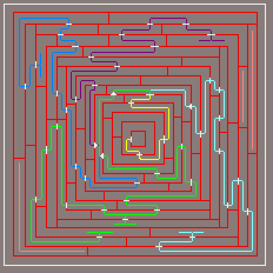 Click to expand |
Mime
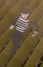 |
Both you and a Mime will be up on stage, and you'll need to watch the Mime and see what he does for an action. Then repeat it when you're in the spotlight by clicking on the action in the chat box. Continue doing this until you are teleported out. You could get a Mime Mask, Robe, Pants, Gloves or an extra emotion to use. |
Mime EmoteGlass wall, glass box, lean, and climb rope | 500 CoinsIf you have all mime rewards |
|---|
Strange Box
| You must solve the puzzle by opening it and answering the simple question it gives. If you wait too long, the box will continue duplicating until it fills your inventory. You'll need to answer all of the boxes to be rewarded. | 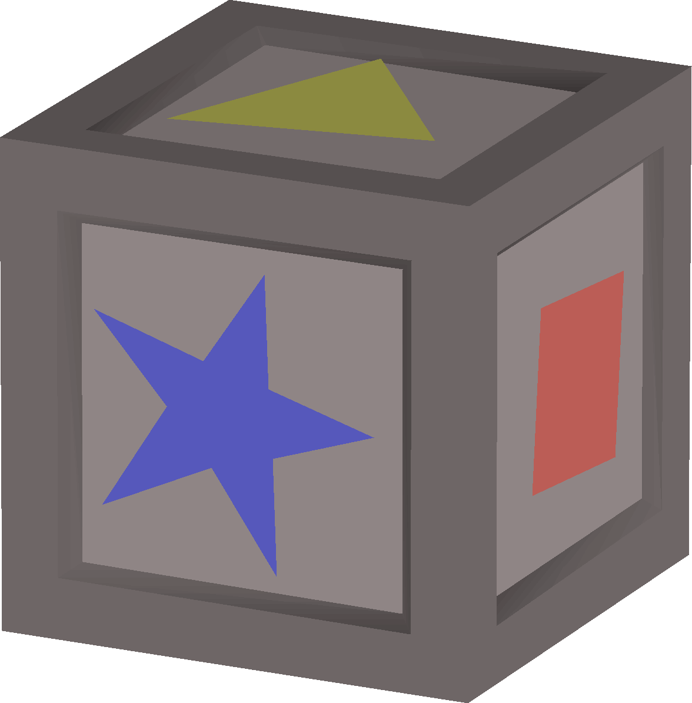 |
CoinsCoins: 20, 40, 80, 160, 320, 640 |
|||||||
|---|---|---|---|---|---|---|---|
| 5/64 | 1/4 | 1/8 | 1/16 | 1/16 | 1/64 | 1/128 | 1/128 |
Mining Random Events
Rock Golem
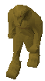 |
The Rock Golem will appear and attack you while you are mining. Its combat level depends on your combat level so its not always fixed, varies from 14 - 170. You can run away for 3 or 4 seconds until it stops chasing you - unless you want to kill it. It can drop ores, stouts, or pickaxes. |
Smoking Rocks
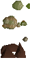 |
If you mine the rock too long it will eventually start smoking - if you hit it you will cause an explosions hitting you 10hp and breaking your pickaxe. Don't hit it!!! If you did, you can fix your pickaxe at the Pick Salesman Nurof (in the Dwarven Mine) for a small fee. | 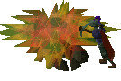 |
Pickaxe Splitting
| Your pickaxe head will fly off from its handle a few squares away. Pick it up and re-attach it to the pickaxe handle by 'using' them together. | 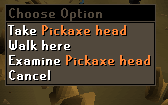 |
Fishing Random Events
River Troll
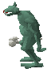 |
The River Troll will attack you if you have been fishing on the same spot too long. Its level also varies according to yours. Varies between 14 - 170. Just run away until it stops chasing you - unless you want to kill it. It can drop bait, raw fish, oysters, or junk. |
Big Fish
| This sneaky fish will appear to snatch your fishing equipment, sending it flying nearby, and temporarily disables the fishing spot for a while. Pick up your equipment and wait for the fishing spot to come back or move onto another spot. | 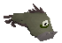 |
Whirlpool
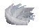 |
A whirlpool will engluf the fishing spot disabling you from fishing in it until it goes away minutes later. If you try to fish in the whirlpool, unless you are level 76 or above, you will lose your equipment. Wait for the spot to return or move to another spot. |
Woodcutting Random Events
Tree Spirit
| The Tree Spirit will attack you if you have been woodcutting for some time, their levels vary according to yours; varies between 14 - 170. Just run away until it stops chasing you - unless you want to kill it. It can drop nature runes or woodcutting axes from steel to rune. It is one of the two only NPCs that can drop a rune axe, with the other being the King Black Dragon. | 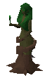 |
Ent
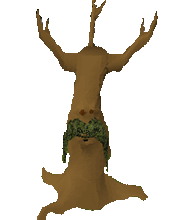 |
Sometimes you will find your tree you are cutting has turned into an Ent. If you continue chopping the Ent, your axe will break. You can fix your axe at Bob's axes in Lumbridge, for a small fee. |
Axe Splitting
| Your axe head will fly off a few squares away when you are woodcutting. Pick up the head and re-attach it to the axe handle by 'using' them together. | 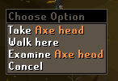 |
Thieving Random Events
Watchman
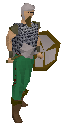 |
A watchmen can appear if you've been thieving too long and attack you, its level varies according to yours, the highest seen is 170. Just run away until it stops chasing you - unless you want to kill it. It can drop coins, nature runes, water runes, herbs, and steel bars. |
Poison Cloud
| When you are thieving chests you will be surrounded by a green gas cloud poisoning you!. Get away and drink a antipoison as soon as possible. | 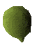 |
Prayer Random Events
Zombie
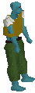 |
When fighting or burying bones they will appear and attack you, their level varies on yours but the highest seen is 170. Just run away until it stops chasing you - unless you want to kill it. It can drop bait, chaos runes, nature talisman, and all types of bones. |
Shade
| While burying all types of bones a shade might appear, its level depends on yours but the highest is 170. Just run away until it stops chasing you - unless you want to kill it, can drop top and bottom black robes. | 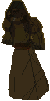 |